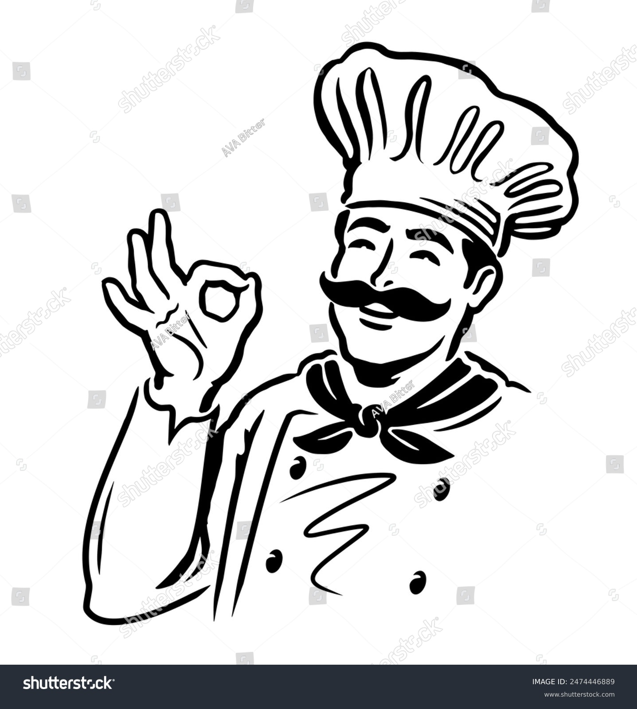

Bienvenidos a Nuestra Sociedad
En la Sociedad Gastronómica, nos apasiona la cocina y la cultura culinaria. Nuestra misión es reunir a personas que comparten el amor por la buena comida, el descubrimiento de nuevos sabores y el respeto por la tradición.
Nuestras Actividades
- Clases de cocina con chefs invitados
- Eventos de cata de vinos y degustaciones
- Exploración de cocinas internacionales
- Actividades de networking para miembros
Únete a Nosotros
Si deseas ser parte de nuestra comunidad y disfrutar de experiencias gastronómicas únicas, visita nuestra página de contacto para más información.